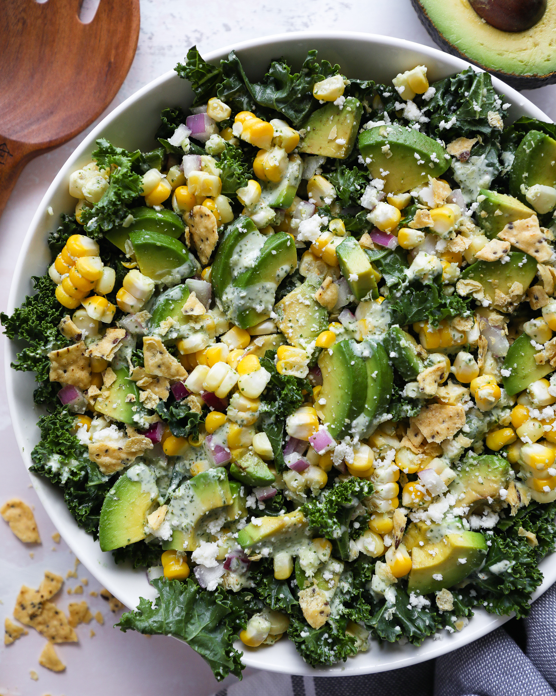

Kale Salad

This is a kale salad that's super easy to make and extremely delicious. Also, don't
worry about sticking to the recipe; it's super easy to add or omit ingredients. It
would go great with chicken or beans or you can even substitute parsely for the
cilantro (for all those people with that cilantro gene).
Ingredients:
- kale
- corn
- olive oil
- red onion
- greek yogurt
- lime
- cilantro
- some other ingredients i'm forgetting
Cooking Instructions
- add the wet ingredients and blend them or something to make the dressing
- remove stalks from kale and cut into bite size pieces
- in a large bowl, add a light drizzle of olive or avocado oil to the kale and massage for 5 minutes or until the kale turns a light green color
- add all the other ingredients that aren't in the dressing to the kale
- dump that dressing on and gobble that shit up
Return to main page